Big Orange Crayonmusical thingsLong Since Forgotten (I think?), Amanda Rogers, Jim James, and Jonah's Onelinedrawing Mother Earth's Cafe, Albany, NY May 12, 2001 Pictures at the bottom! You know, if I could remember to write reviews the night of the show or the day after, I wouldn't forget everything all the time, you know? Still, this was a lovely show and I had fun and I remember that, at least. The first band to play was called Long Since Forgotten. I think. If that isn't their name, it's at least an ironic substitute. Either way, I liked them. They were kind of poppy-acoustic emo-ish, and I can't remember the names of the songs that I liked, but they were pretty - more melodic and less drony-moany than a lot of emo. So yay. Amanda Rogers played next and I remember her better because I bought her CD. It's a her-and-a-piano affair, and I thought she was great. Probably my favorite song that she played was called "Puppet Girl" (I think) and she also did a really cool cover of "Something Vague" by Bright Eyes. It was funny - when she said she was going to do a cover, I was like "she's going to cover Bright Eyes!" and she did. Weird. Anyway, she was awesome. Next was Jim James. He was neat. I think he was sort of pop-folk in the Vermont vein. I liked him a lot, but it was a long weekend so I don't really have much more to say... Jonah's Onelinedrawing was last (for me, anyway - I left early when another band was setting up) and he was amazing, just like the last time he was in Albany, which was almost exactly a year ago. I think this time I enjoyed him even more since I knew a lot of the songs and had a better idea of what he was all about. I really think he's a genius, and if he's ever in your town, go see him. I just get this feeling of honesty and purity from him, which is a really lame thing to say but when you see him, you'll know what I mean. When he first came on, I was thinking "Oh I hope he plays 'Aeroplanes'" and he started off with "Aeroplanes". I don't know what was up with me that night. He sang beautifully and I was really amazed with how quickly he could go from singing softly to screaming without it sounding weird. He's just cool like that I guess. Lots of pictures this time (they came out better than I thought - it was really dark by the end) Long Since Forgotten: 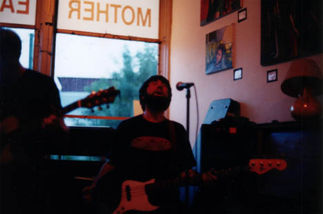 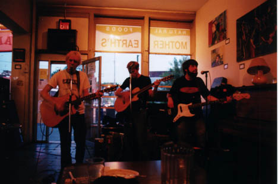 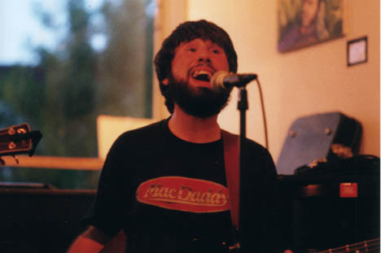 Amanda Rogers: 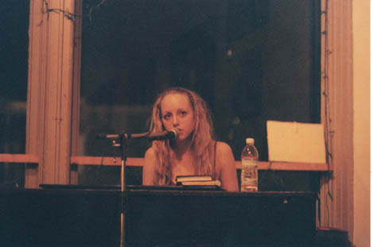 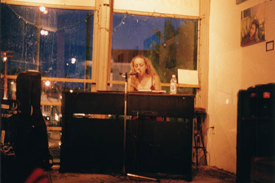 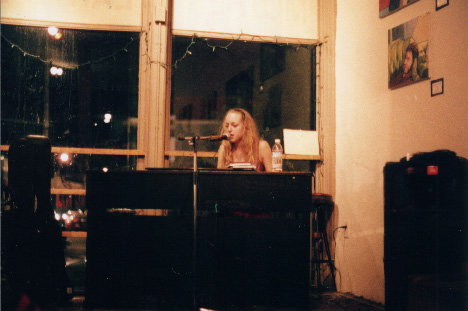 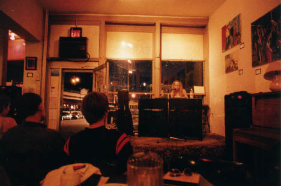 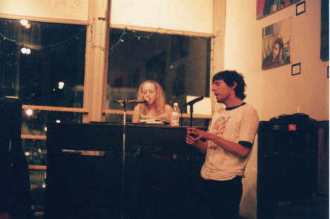 (Jonah joined Amanda for a little bit, and then Amanda played for Jonah, too.) Jim James: 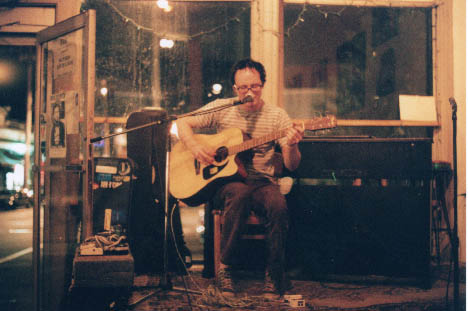 Jonah's Onelinedrawing: 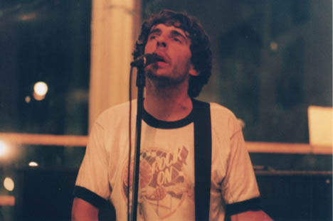 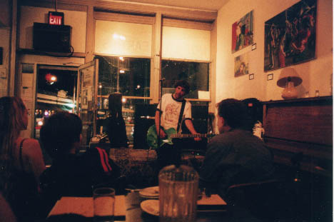 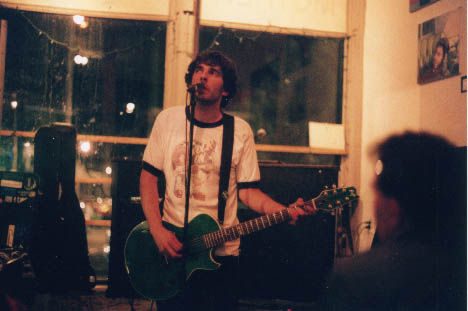 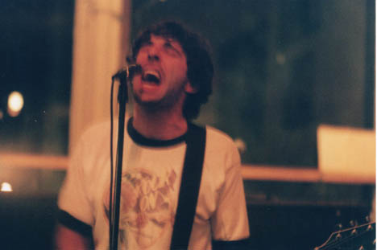 yada yada yada: Nikkormat FTN, Fuji Superia 1600, 24mm f/2.8, 50mm f/1.4, 105mm f/2.5 Nikkors. Shutter speeds from 1/8 to 1/60. Yay. Please don't post these elsewhere unless you're in one of the bands or are a nice person. |